Licenciatura en Gestión de TI — Inteligencia de negocios, 2026
Universidad Nacional de José C. Paz
Este trabajo clasifica los siniestros viales con víctimas registrados en la Ciudad de Buenos Aires por el Observatorio de Movilidad y Seguridad Vial entre el 1 de enero de 2019 y el 31 de diciembre de 2025. La pregunta es si un hecho ya ocurrido fue leve, grave o mortal. El archivo de hechos reúne 65.818 siniestros y pesa 12,2 MB. De ellos, 62.174 son leves, 2.955 graves y 689 mortales, cerca del 1 %. Con esa proporción, responder siempre «leve» acierta el 94,5 % y no encuentra ni un grave ni una muerte, así que el acierto global no alcanza para elegir un modelo. La notebook de análisis muestra la caída de hechos en 2020, una tasa más alta entre peatones que entre motos, una tasa más alta en autopista que en calle, y una tasa de madrugada varias veces mayor que la de la tarde. Esas métricas deciden el preprocesado: el hueco de la hora se marca con un indicador, el faltante de las categorías queda como SIN_DATO, y el desbalance se trata con un peso de clase de 31,85 para el mortal, 7,42 para el grave y 0,35 para el leve. Sobre esa matriz se ajustan una regresión logística, un árbol de decisión de profundidad 5 y un random forest de 200 árboles. En la prueba, de 13.164 hechos, el forest es el elegido por el recall macro: 62,1 %. Encuentra 117 de 138 muertes y 276 de 591 graves. El análisis, el código y este documento se hicieron con el modelo Grok 4.7.
Clasificar la gravedad de un siniestro vial es un uso corriente de la inteligencia artificial aplicada al transporte. Ali, Hussain y Haque (2024) revisan modelos de ocurrencia, de frecuencia y de gravedad, y marcan dos cuidados que este trabajo toma al pie de la letra: el desbalance de la clase grave tiene que tratarse con una técnica explícita, y no conviene mezclar definiciones distintas de gravedad. Hamdan y Sipos (2025) recorren 32 estudios de 2020 a 2025 y encuentran que los modelos más usados para la gravedad son random forest, XGBoost y SVM, y que el tipo de vía y el tipo de usuario cambian el resultado. Butt y Shafique (2025) describen el paso de los modelos estadísticos a redes y ensembles, con una utilidad de gestión: decidir dónde intervenir.
Esas tres lecturas, todas de 2024 o 2025, justifican el tema y el diseño. La muerte en la vía sigue ocurriendo en la Ciudad, la serie oficial llega a 2025 y el portal la actualizó el 29 de junio de 2026. Un clasificador de tres niveles, leve, grave o mortal, permite ver qué combinaciones concentran cada gravedad. Esa lectura sirve a la gestión de la movilidad. No reemplaza la causa judicial ni señala un culpable.
La definición que se usa es la del propio observatorio, citada como fuente de los datos y no como uno de los tres papers. Un siniestro con víctimas exige al menos un vehículo en movimiento, una vía de acceso público y al menos una persona herida o muerta. Mortal es la muerte dentro de los 30 días. Grave es la lesión con internación de al menos 24 horas. Si hay varias víctimas, manda la más grave (Gobierno de la Ciudad de Buenos Aires, 2026).
Ali, Y., Hussain, F. y Haque, M. M. (2024). Advances, challenges, and future research needs in machine learning-based crash prediction models: A systematic review. Accident Analysis & Prevention, 194, 107378. https://doi.org/10.1016/j.aap.2023.107378
Butt, M. S. y Shafique, M. A. (2025). A literature review: AI models for road safety for prediction of crash frequency and severity. Discover Civil Engineering. https://doi.org/10.1007/s44290-025-00255-3
Gobierno de la Ciudad de Buenos Aires. (2026). Víctimas de siniestros viales [Conjunto de datos]. https://data.buenosaires.gob.ar/dataset/victimas-siniestros-viales
Hamdan, N. y Sipos, T. (2025). Advancements in machine learning for traffic accident severity prediction: A comprehensive review. Periodica Polytechnica Transportation Engineering. https://doi.org/10.3311/pptr.40369
En la Ciudad, los hechos que solo rompen chapa quedan fuera de esta base. La pregunta de este trabajo es anterior al modelo: de un hecho ya ocurrido, con la hora, la comuna, el tipo de vía, el modo de quien se lesionó y la contraparte, ¿el hecho fue leve, grave o mortal? La contraparte es el otro vehículo que figura en la fuente. Esa columna describe el hecho. No es una sentencia.
El problema práctico es de proporción. 62.174 de 65.818 hechos son leves. Un tablero que cuente aciertos premia al que diga siempre «leve». La utilidad está en recuperar graves y muertes, aunque eso marque también muchos hechos que no lo fueron.
La base es el CSV de hechos del Observatorio de Movilidad y Seguridad Vial. Una fila es un siniestro, no una persona. El archivo original está en data/siniestros_viales_hechos.csv (12.198.322 bytes, separador punto y coma, UTF-8). La descarga del 26/10/2026 y el enlace de origen están anotados en data/ORIGEN.txt. El servidor informó última modificación el 29/06/2026.
notebooks/01_eda_limpieza.ipynb lee ese CSV, unifica textos y escribe data/siniestros_hechos_limpio.csv: 65.818 filas, 12,8 MB. Los dos archivos superan los 5 MB de la consigna. La gravedad publicada es un encoding jerárquico de tres niveles, LEVE, después GRAVE, después MORTAL: 62.174 leves, 2.955 graves y 689 mortales. El armado está en la sección 3.1. El CSV de víctimas de la misma ficha tiene edad y sexo, pesa 4,1 MB y queda para una línea futura. La ANSV publica PDF y el microdato nacional no es abierto. El Sistema de Alerta Temprana registra muertes, no los hechos que solo dejaron heridos.
El objetivo es un clasificador de tres niveles, herido leve, herido grave o víctima mortal, útil para marcar combinaciones de hora, vía y modo donde se concentra cada gravedad. Se elige por el recall macro de la prueba, el promedio del recall de los tres niveles. El acierto global queda como piso de comparación, porque con este desbalance es alto aunque el modelo no encuentre ni graves ni muertes.
La propuesta son tres clasificadores sobre la misma matriz, más un piso que predice siempre leve. Los tres usan el peso de clase calculado en el entrenamiento (leve 0,353, grave 7,424 y mortal 31,854) y la semilla 42.
Entran mes, día, hora, comuna, tipo de vía, modo de la víctima y contraparte. Quedan afuera la gravedad, los tres conteos de víctimas por gravedad y el identificador: en este archivo el prefijo HC es mortal y el prefijo LC es lesionado, sin excepciones. participantes_siniestro repite modo y contraparte, así que también queda afuera. El ajuste y la comparación están en notebooks/03_modelos.ipynb. El modelo que se guarda es el de mayor recall macro. Si hay empate, manda el recall del mortal y después el del grave.
Primero se midió el archivo. Después, cada decisión de preprocesado y de modelo se apoya en una de esas medidas. El recorrido del código es este:
notebooks/01_eda_limpieza.ipynb lee el CSV original, limpia, calcula las tasas y escribe los gráficos de docs/figuras/.notebooks/02_preprocesamiento.ipynb parte el archivo limpio, arma la matriz y guarda data/preprocesado/pipeline.joblib y data/preprocesado/pesos_clase.json.notebooks/03_modelos.ipynb carga ese pipeline, transforma la prueba sin reajustar el escalador, ajusta los tres modelos y escribe las matrices docs/figuras/06_matriz_*.png y el resumen data/preprocesado/modelos.json.Una fila puede tener, a la vez, víctimas leves, graves y mortales. Esos tres conteos conviven. La columna gravedad_siniestro los resume con una sola palabra, y la palabra es el máximo de la escala.
Esa regla es la que deja el 1 %. El nivel de arriba tiene que ganarle a los otros dos, y en la Ciudad eso ocurre en 689 de 65.818 hechos. Los otros dos niveles son 2.955 graves (4,5 %) y 62.174 leves (94,5 %). Dentro de los 689 mortales, 14 hechos tienen dos muertes: el conteo guarda el 2 y la etiqueta sigue siendo una sola, MORTAL. Las víctimas mortales suman 703.
Una escala de tres niveles se puede pasar a un clasificador de tres maneras.
En notebooks/03_modelos.ipynb la etiqueta es gravedad_siniestro. El reparto 80/20, semilla 42, se estratifica con esa columna. En el entrenamiento quedan 49.739 leves, 2.364 graves y 551 mortales. En la prueba, 12.435 leves, 591 graves y 138 mortales.
docs/diagramas/05_jerarquia.svg.Hay 31 hechos publicados como LEVE que igual tienen un conteo de graves (23 de 2020 y 8 de 2024). La regla del máximo los pondría en GRAVE. Se deja la etiqueta oficial, así que en el modelo entran como leves.
Los tres conteos y el prefijo del identificador son la misma jerarquía escrita de otra forma. Un conteo mortal mayor que cero ya dice que el máximo es MORTAL, y el prefijo HC también. Por eso no entran como variables: le entregarían la etiqueta al modelo.
La notebook de limpieza no descarta filas. Los vacíos, los SD y el único #¡REF! de las categorías pasan a SIN_DATO. Las comunas escritas como 1, Comuna 1 y COMUNA 1 quedan en un solo formato. Los 3.276 totales de víctimas en SD, todos de 2025, se reconstruyen porque las tres partes sumaban 1. Los 31 hechos publicados como leves con un conteo de graves se dejaron como vinieron, según la sección 3.1. De las 65.818 filas, 36.579 reciben al menos una de esas reglas y 29.239 quedan intactas.
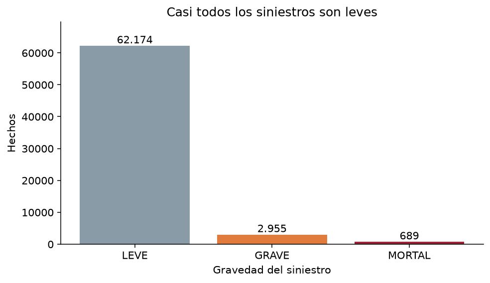
docs/figuras/01_gravedad.png. De 65.818 hechos, 62.174 son leves (94,5 %), 2.955 graves (4,5 %) y 689 mortales (1,0 %). El eje es un conteo: la barra leve es alta porque hay muchos hechos, no porque el riesgo sea alto.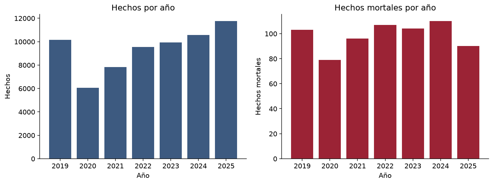
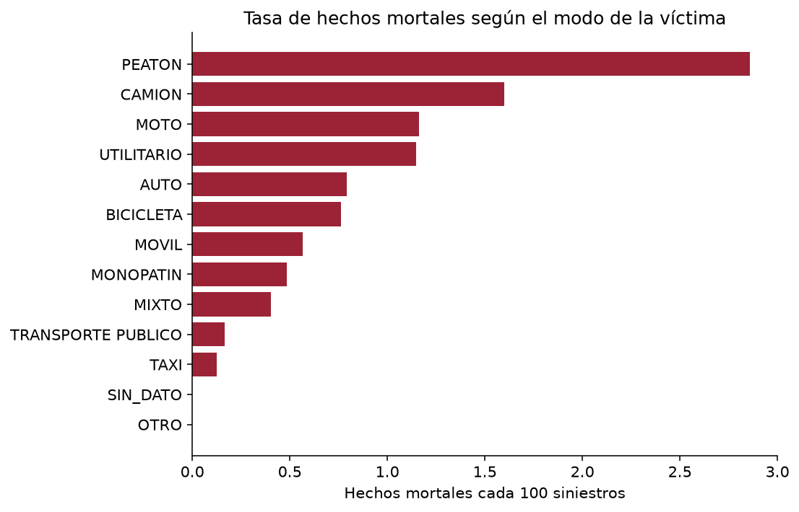
SIN_DATO queda en cero: los 10.929 hechos sin modo son todos no mortales.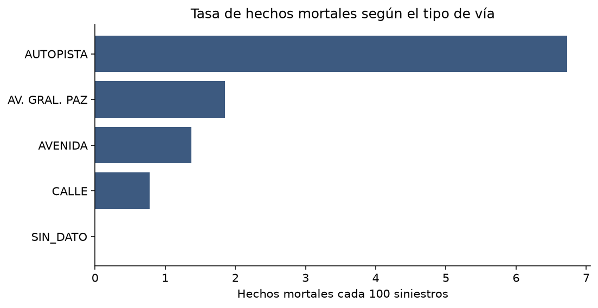
SIN_DATO otra vez en cero.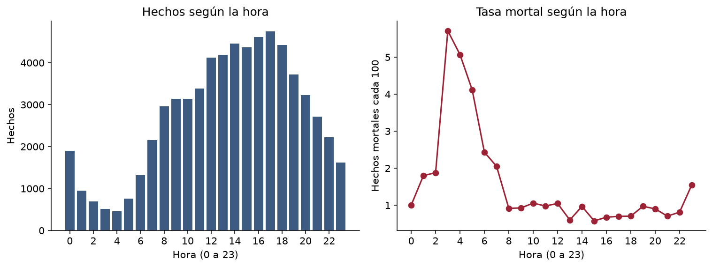
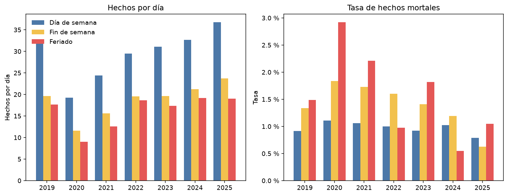
En los siete años el día de semana junta más hechos por día que el fin de semana, y el fin de semana más que el feriado. El promedio es 29,4 hechos por día de semana, 18,7 por día de fin de semana y 16,3 por feriado. En conteo bruto la diferencia es más grande todavía, porque el día de semana son 1.719 fechas y el feriado 136. 2020 baja las tres barras y no cambia el orden.
La tasa mortal va en el otro sentido en casi toda la serie: 0,96 % en día de semana (484 de 50.481), 1,33 % en fin de semana (174 de 13.119) y 1,40 % en feriado (31 de 2.218). Esas 31 muertes están repartidas de a 2 a 6 por año. En 2020 el feriado marca 2,92 % con 5 muertes en 171 hechos, y en 2024 marca 0,55 % con 2 muertes. El porcentaje del feriado se mueve con pocos casos. El fin de semana sostiene la tasa más alta que el día de semana de 2019 a 2024. En 2025 se invierte: 0,63 % el fin de semana y 0,79 % el día de semana.
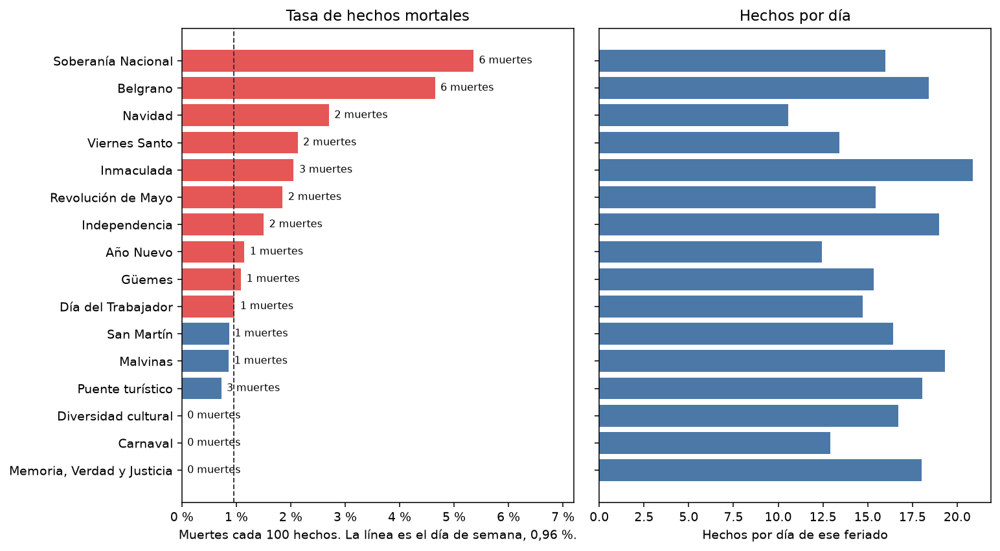
Esas 31 muertes no se reparten parejo. Soberanía Nacional tiene 6 en 112 hechos (5,36 %) y Belgrano otras 6 en 129 (4,65 %). Soberanía suma una muerte en seis años distintos. Belgrano suma dos en 2019, 2021 y 2022. Navidad tiene 2 muertes, las dos de 2020, y es el feriado con menos hechos por día (10,6). Carnaval, 181 hechos en catorce días, no tiene ninguna. Memoria, Verdad y Justicia tampoco, en 126. El puente turístico queda en 0,72 %, por debajo del día de semana.
Lo que se hace a continuación sale de las figuras anteriores. El reparto es 80/20, estratificado por los tres niveles, semilla 42, y ocurre antes de calcular cualquier media. El entrenamiento queda con 52.654 filas: 49.739 leves, 2.364 graves y 551 mortales. La prueba queda con 13.164 filas: 12.435 leves, 591 graves y 138 mortales.
notebooks/02_preprocesamiento.ipynb. El escalador se ajusta en el entrenamiento. La prueba usa el mismo pipeline, sin reajustarlo.Hay tres operaciones distintas. Imputar rellena un hueco. Escalar pone las columnas numéricas en la misma escala. Pesar la clase cambia cuánto tira cada fila en el ajuste. El escalado no equilibra las clases. El peso no rellena huecos.
En modo, vía, comuna y contraparte no hay una media entre moto y peatón. SIN_DATO sigue como categoría. En el archivo completo, ese faltante no aparece entre los mortales en modo, vía ni comuna. Si entra como categoría, el modelo puede estar leyendo qué tan completo quedó el sumario. Se deja visible.
En la hora sí hay media. En el entrenamiento es 13,64 y la mediana es 14. Las dos caen en la tarde, la franja de menor tasa de la figura 6. Copiar 13,64 en el hueco le inventaría al hecho una hora de baja tasa. Se guarda hora_faltante, que vale 1 si la hora no vino. La hora escalada de esas filas queda en 0 para que la matriz no tenga celdas vacías. Ese 0 es el centro de la escala, no las 14. Una hora real cercana a la media también queda cerca de 0, con el indicador en 0.
StandardScaler resta la media del entrenamiento y divide por su desvío. Se aplica a mes, día y hora observada. No se aplica a la etiqueta ni a las dummies. Después del escalado, mes, día y hora observada tienen media 0 y desvío 1. La hora es circular: las 23 y las 0 quedan en puntas opuestas de la recta. El escalado no dobla esa recta. Una codificación con seno y coseno queda como línea futura y no se armó un segundo pipeline.
La matriz final tiene 54 columnas: 2 de calendario, 2 de hora y 50 dummies. No quedó ningún nulo. Para volver a cargar el pipeline, el directorio del proyecto tiene que estar en el path de Python, porque la hora usa src/escala_hora.py.
El peso de una clase es la cantidad de filas de entrenamiento dividida por (3 × las filas de esa clase): leve 52.654 / (3 × 49.739) = 0,353; grave 52.654 / (3 × 2.364) = 7,424; mortal 52.654 / (3 × 551) = 31,854. Esos valores están en data/preprocesado/pesos_clase.json. Cada fila mortal tira del ajuste unas 90 veces más que cada fila leve, y cada fila grave unas 21 veces más. No se copia ni se borra ningún siniestro.
notebooks/03_modelos.ipynb parte el CSV limpio con la misma semilla y el mismo 80/20 estratificado por los tres niveles, carga el pipeline ya ajustado y transforma la prueba. El piso predice siempre leve. Los tres modelos reciben el diccionario de pesos.
| Modelo | Hiperparámetros | Acierto | Recall macro | Recall grave | Recall mortal |
|---|---|---|---|---|---|
| Siempre leve | predicción fija | 94,5 % | 33,3 % | 0 % | 0 % |
| Regresión logística | max_iter 1000, semilla 42 | 59,2 % | 61,7 % | 50,3 % | 75,4 % |
| Árbol | profundidad 5, hoja mínima 20 | 65,7 % | 57,3 % | 19,3 % | 84,8 % |
| Random forest | 200 árboles, profundidad 8, hoja mínima 10 | 54,8 % | 62,1 % | 46,7 % | 84,8 % |
En la matriz, la fila es lo que pasó y la columna es lo que dijo el modelo. El orden de las dos es leve, grave, mortal. La diagonal son los aciertos de cada nivel.
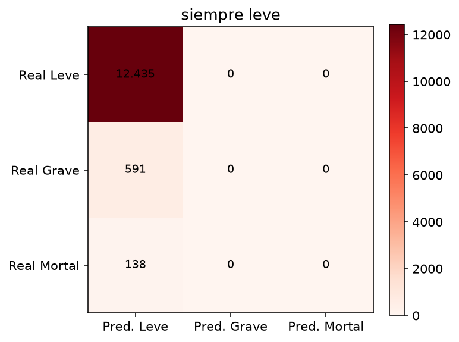
docs/figuras/06_matriz_siempre_leve.png.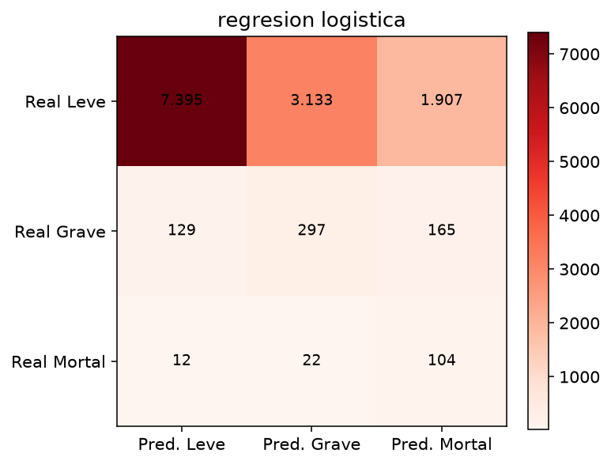
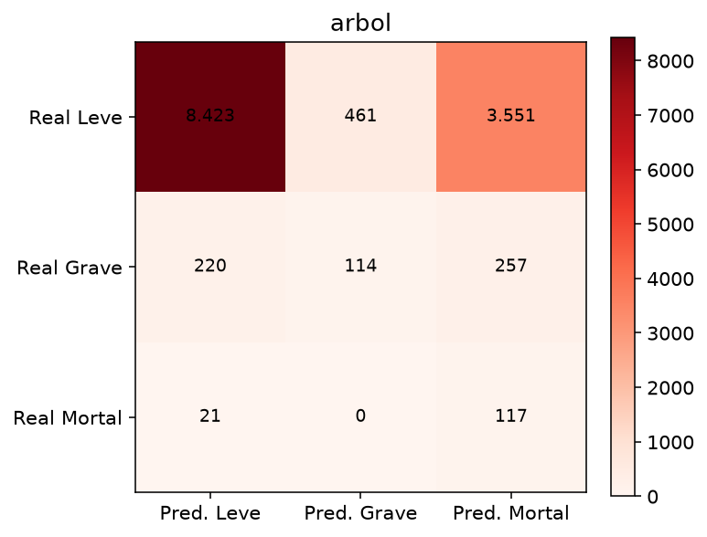
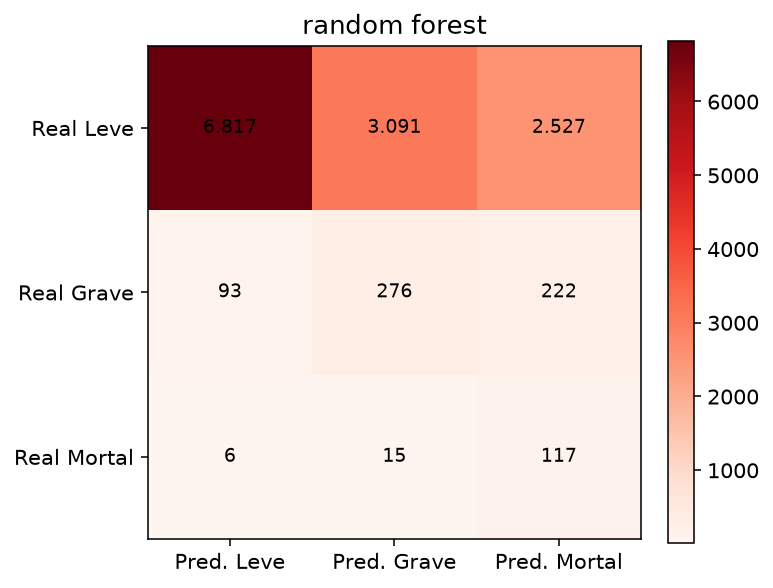
El reporte es la salida de classification_report en notebooks/03_modelos.ipynb, sobre las 13.164 filas de prueba. Support: 12.435 leves, 591 graves y 138 mortales.
siempre_leve
precision recall f1-score support
LEVE 0.945 1.000 0.972 12435
GRAVE 0.000 0.000 0.000 591
MORTAL 0.000 0.000 0.000 138
accuracy 0.945 13164
macro avg 0.315 0.333 0.324 13164
regresion_logistica
precision recall f1-score support
LEVE 0.981 0.595 0.741 12435
GRAVE 0.086 0.503 0.147 591
MORTAL 0.048 0.754 0.090 138
accuracy 0.592 13164
macro avg 0.372 0.617 0.326 13164
arbol
precision recall f1-score support
LEVE 0.972 0.677 0.798 12435
GRAVE 0.198 0.193 0.196 591
MORTAL 0.030 0.848 0.058 138
accuracy 0.657 13164
macro avg 0.400 0.573 0.351 13164
random_forest
precision recall f1-score support
LEVE 0.986 0.548 0.705 12435
GRAVE 0.082 0.467 0.139 591
MORTAL 0.041 0.848 0.078 138
accuracy 0.548 13164
macro avg 0.369 0.621 0.307 13164
Se elige el random forest. Su recall macro es 0,621, por encima de 0,617 de la logística y de 0,573 del árbol. El árbol empata el recall del mortal, 0,848, y se cae en el grave. El acierto no entra en la elección: el piso, con 0,945, no nombra ni un grave ni un mortal. La precisión del forest queda en 0,082 para el grave y en 0,041 para el mortal.
Con el 94,5 % de leves, el acierto premia al modelo que dice siempre leve. El piso lo muestra en la misma prueba: 94,5 % de acierto, 0 graves y 0 muertes.
El random forest de 200 árboles y profundidad 8, con el peso de los tres niveles, es el que mejor sostiene los tres recall a la vez: 54,8 % en leve, 46,7 % en grave y 84,8 % en mortal. Encuentra 117 de 138 muertes y 276 de 591 graves.
Parte del error se mueve al nivel de al lado. De las 138 muertes, 15 quedan clasificadas como graves y 6 como leves. De los 591 graves, 222 quedan como mortales y 93 como leves. El modelo separa los tres nombres, y la precisión de grave y de mortal sigue siendo baja.
El calendario se lee en hechos por día. En los siete años el día de semana queda arriba (29,4), el fin de semana en el medio (18,7) y el feriado abajo (16,3). La tasa mortal del fin de semana supera a la del día de semana de 2019 a 2024. La del feriado apoya en 31 muertes.
El desbalance. Sin el peso de clase, el ajuste se va a las 49.739 filas leves del entrenamiento y el recall del grave y del mortal se acercan al del piso.
SIN_DATO en modo, vía y comuna no aparece entre los mortales. La categoría puede estar leyendo la calidad del sumario, no el siniestro. Dejarla visible evita esconder el problema y no lo resuelve.
La hora es circular y 2020 es un año de poca movilidad. Una hora en línea recta y una serie junta dejan las dos cosas adentro del mismo ajuste. A eso se suman 31 hechos publicados como leves con un conteo de graves, que se respetaron tal como vinieron, y una muerte con la hora vacía.
Cruzar edad y sexo desde el CSV de víctimas de la misma ficha. Ese archivo pesa 4,1 MB y no entró en esta matriz.
Probar numero_total_de_victimas como variable, y repetir la prueba sin ella. Quedó afuera porque puede dominar al resto y no determina por sí sola si el hecho fue mortal.
Codificar la hora con seno y coseno, y repetir la evaluación con un corte temporal: entrenar hasta 2023 y medir 2024-2025, para ver si el bache de 2020 deja el mismo recall.